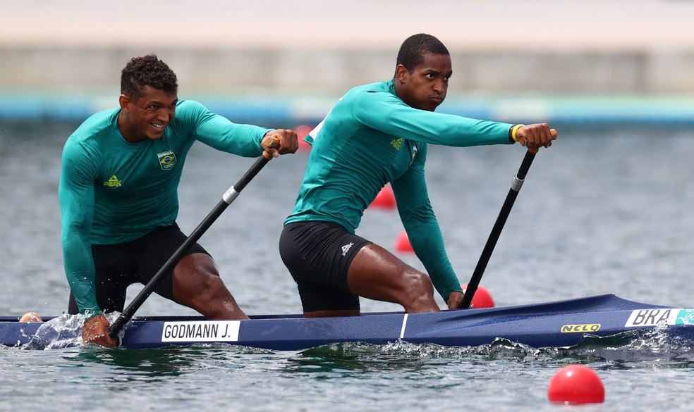

A madrugada de terça-feira será de suma importância para as possibilidades do
Brasil seguir em busca do recorde de medalhas nas Olimpíadas de Tóquio.
Neste momento, o país tem dois ouros, três pratas e cinco bronzes, com dez no total,
o objetivo é superar as 20 medalhas (bater o recorde de 19, da Rio 2016).
Uma meta mais ousada (e improvável) é bater os sete ouros da Rio 2016.

O Brasil é favorito ao ouro em uma complicada e equilibrada última regata da classe 49erFX de vela.
Martine e Kahena só dependem de si para ser campeãs.
A medalha, pelo menos de bronze, está encaminhada, embora tenha cinco duplas com chances de pódio.
Thiago Braz está no grupo dos candidatos ao pódio no salto com vara. Algo parecido com que ele era antes da Rio 2016 e, lá, ele conquistou o ouro. A medalha deve girar na casa dos 5,95m, marca que ele não atingiu nesse ciclo. Há boas chances, mas Thiago não é um dos três favoritos.
Flavia Saraiva, ainda se recuperando da lesão no tornozelo, disputa a final da trave,
na qual ela está no grupo das "que podem surpreender".
A trave é um aparelho que tem muitas surpresas, por conta das inúmeras quedas.
No boxe, um dia decisivo. Três lutas: Abner Teixeira, até 91kg, faz a semifinal contra o tetracampeão mundial Julio Cesar Cruz, em um combate difícil. Aí, Wanderson Oliveira, até 63kg, e Beatriz Ferreira, até 60kg, lutam as quartas de final com o objetivo de ir à semi e garantir um pódio. Beatriz é muito favorita na luta dela, enquanto Wanderson enfrenta Andy Cruz, outro cubano super laureado.
O futebol masculino tenta uma vaga na final contra o México,
enquanto Ana Patrícia/Rebeca tenta um lugar na semi do vôlei de praia
feminino diante de uma dupla da Suíça.
Por fim, o vôlei masculino joga com o Japão por um lugar na semi.